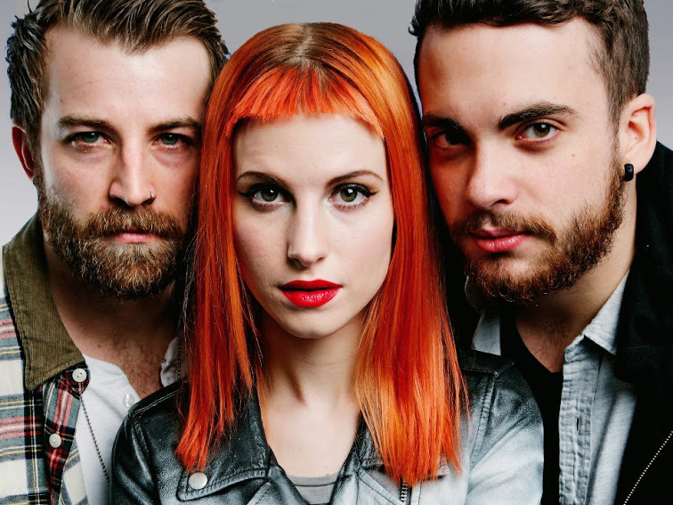
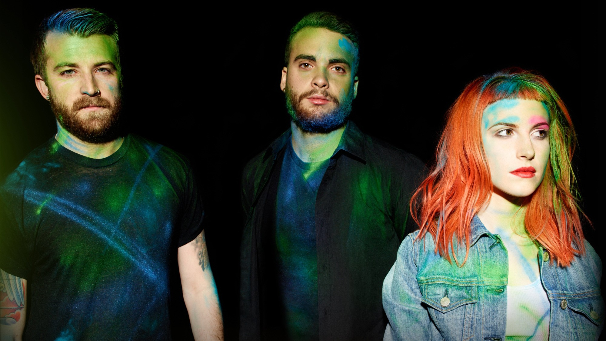
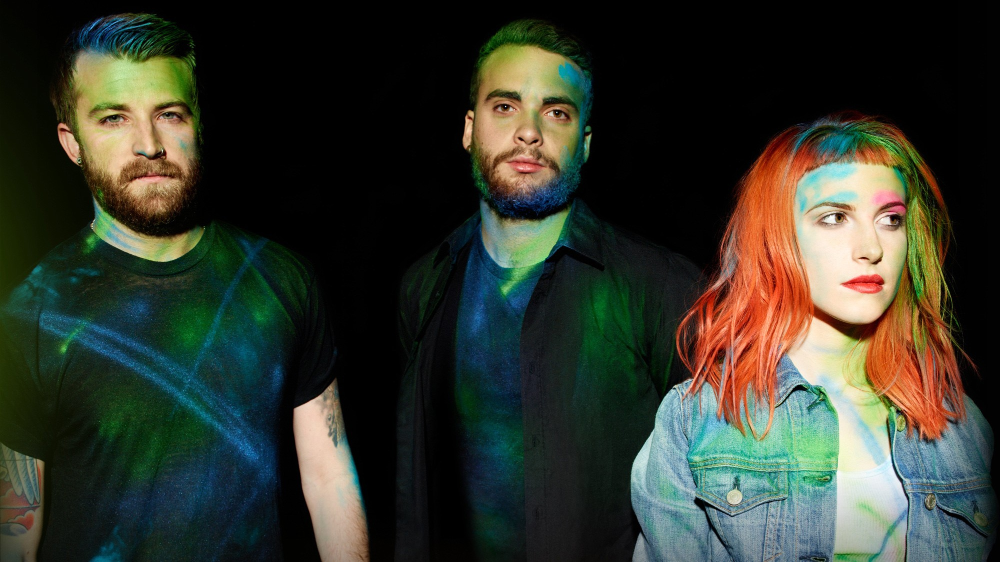
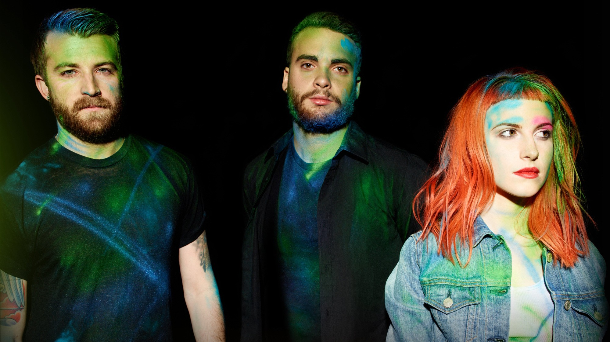

PARAMORE

 

Próximos Eventos |
|---|
Nova York |
Flórida |
Los Angeles |
|---|---|---|
15/10/2016 |
20/10/2016 |
25/10/2016 |
Lincoln Center |
Downtown Orlando |
Downtown LA |
19h às 23h |
14h às 18h |
9h às 12h |
*Clique aqui para comprar o seu ingresso
Sobre
Paramore é uma banda de Rock alternativo originalmente formada no ano de 2004, em Franklin, no estado americano do Tenessee. A banda inicialmente foi formada por Josh Farro (Guitarra), Zac farro (Bateria), Hayley Williams (Vocal), e Jeremy Davis (Baixo) quando ainda eram adolescentes. Antes de entrarem para o Paramore, Hayley e o baixista Jeremy haviam participado de uma banda chamada The Factory. Durante esse período os irmãos Farro já tocavam juntos. A vocalista Hayley Williams conheceu Josh e Zac na escola em 2002 aos 12 anos, após ter se mudado de sua cidade natal (Meridian – Mississipi), para Franklin.
Nesse tempo a banda introduziu o vizinho de Hayley, Jason Bynum na guitarra base e adotou o nome “Paramore”. Após um ano, Jason Bynum alegava problemas pessoais, e foi substituído por Hunter Lamb.
O contrato com a sua primeira gravadora aconteceu alguns meses depois, em Abril de 2005, após John Janick, fundador da Fueled By Ramen ter visto apenas uma apresentação do grupo.